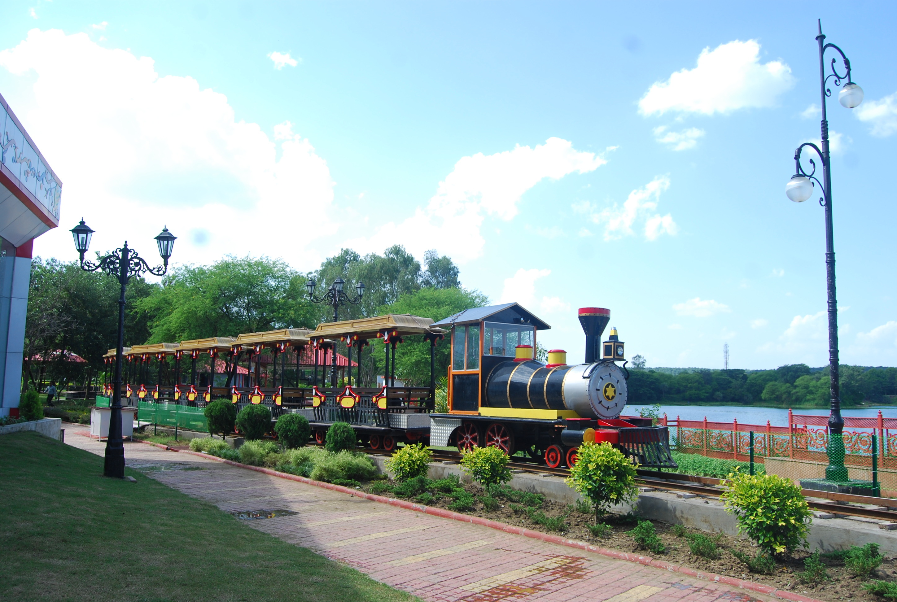

Images

| Location | On the banks of Upper Lake, Bhopal |
| Place type | Entertainment zone, Fun and Activity |
| Place visit with | FAmily, Friends, Couples |
| time and fee | The entry fee for Adults is INR 20 and Children is INR 10. It is open to visitors from 11:00 AM to 10:00 PM. |
Sair Sapata is an important recreation area situated on the banks of Upper Lake in Bhopal. It was inaugurated on 29 September 2011. The tourist complex has a wonderful play park which offers a lot of recreational activities for all. The complex has attractions that actively encourage tourism, such as a two-acre children's play area, musical fountain, toy train, and a suspension bridge. The sprawling complex offers thrilling adventure activities like jungle hiking, zorbing and thrilling boat rides.